Hello! & Welcome!
I am Leenard Troy Javier
I am 20 years old
I live in Rodriguez, Rizal
And this is my autobiography.
 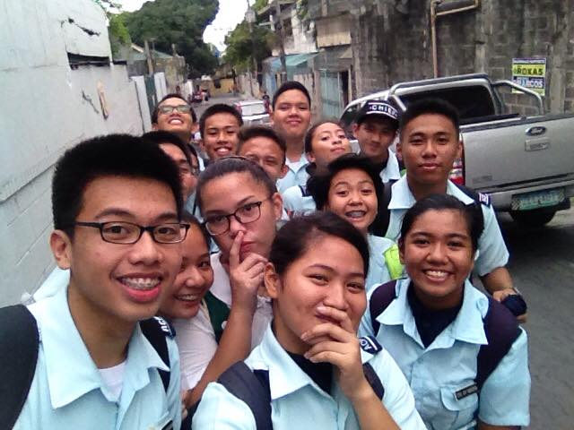
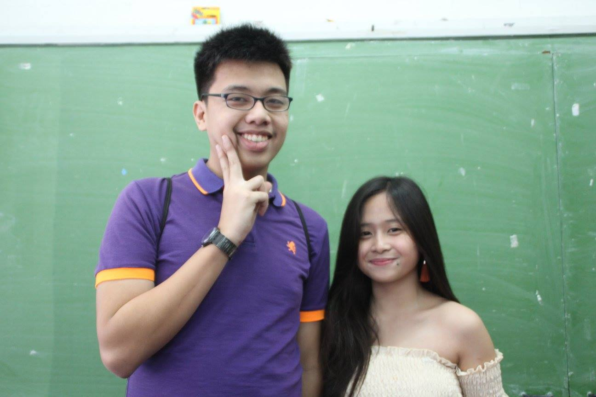
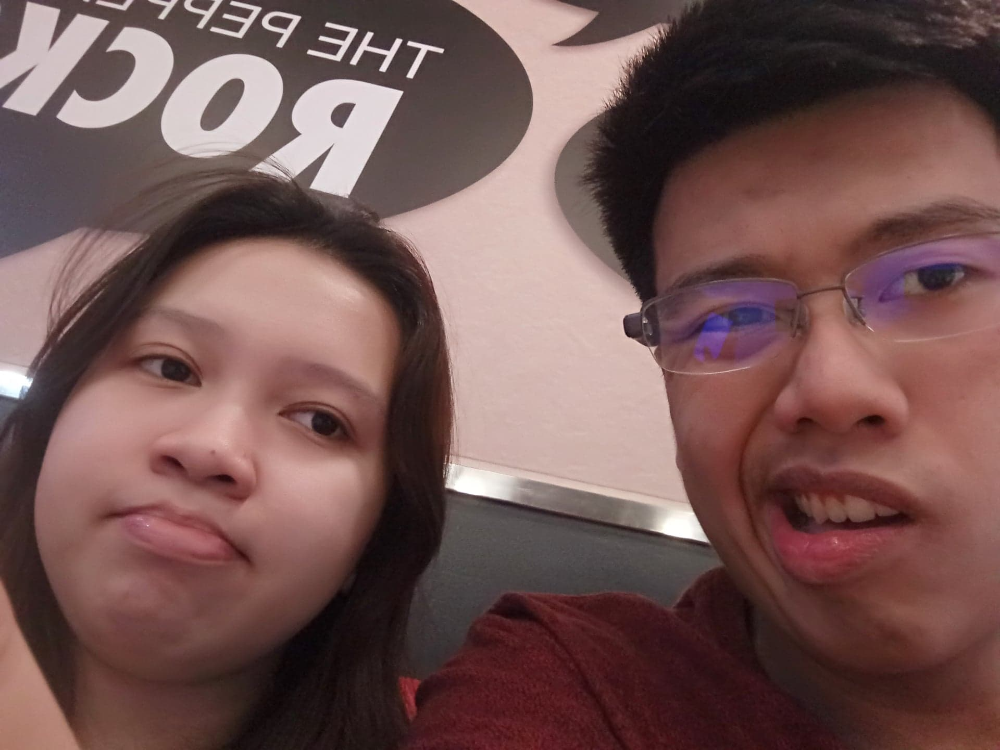
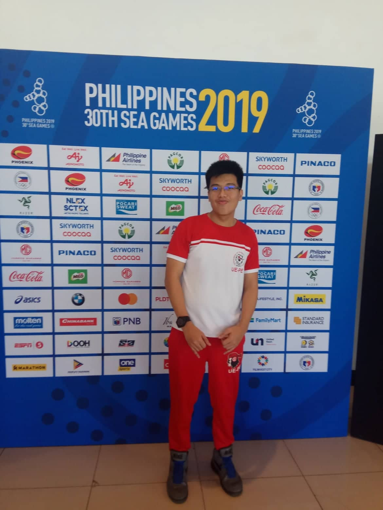
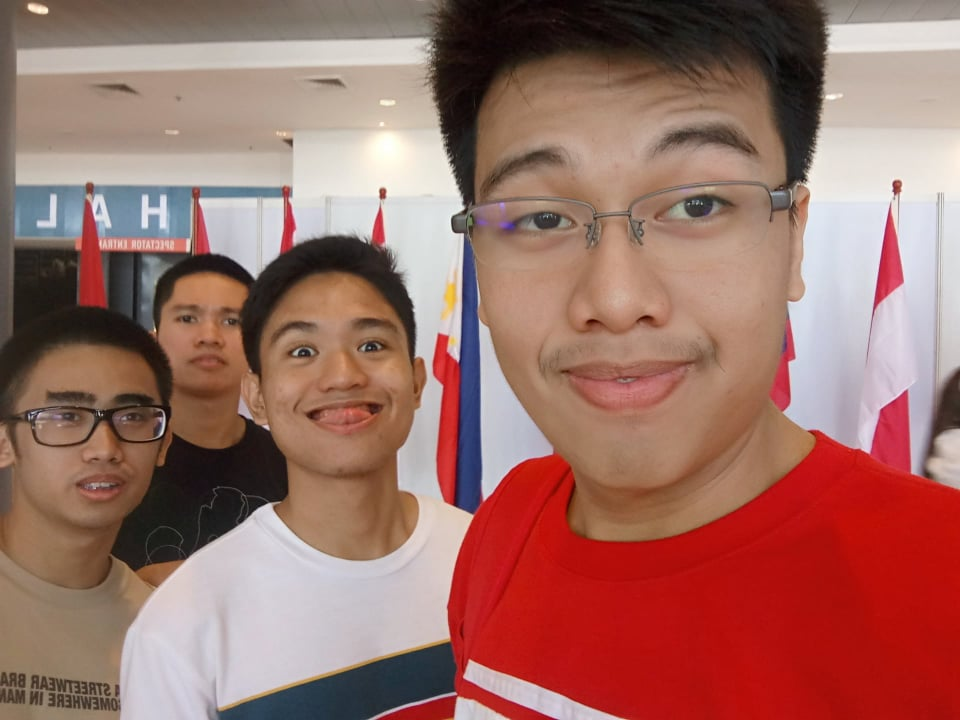
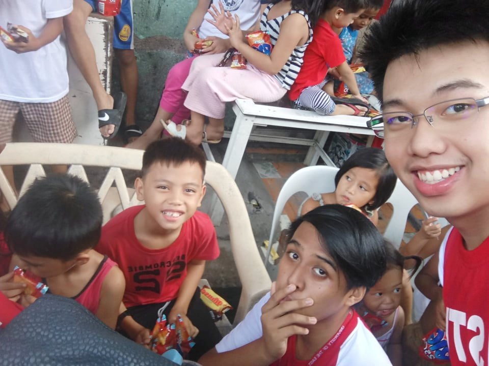
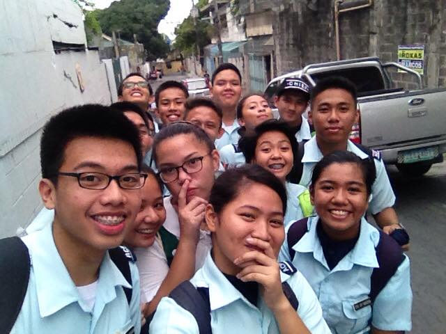
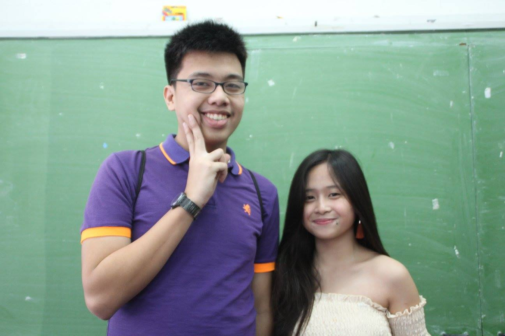
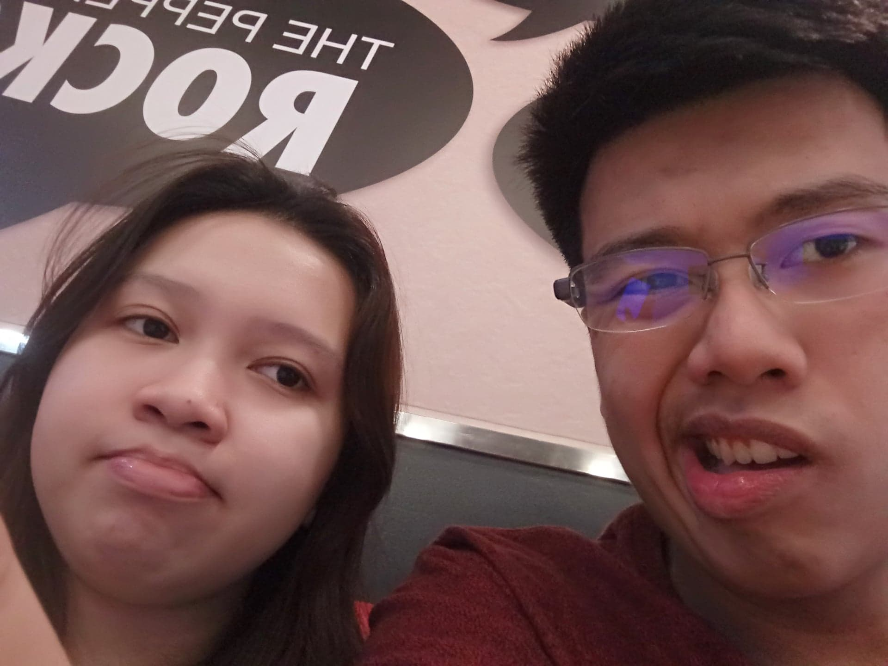
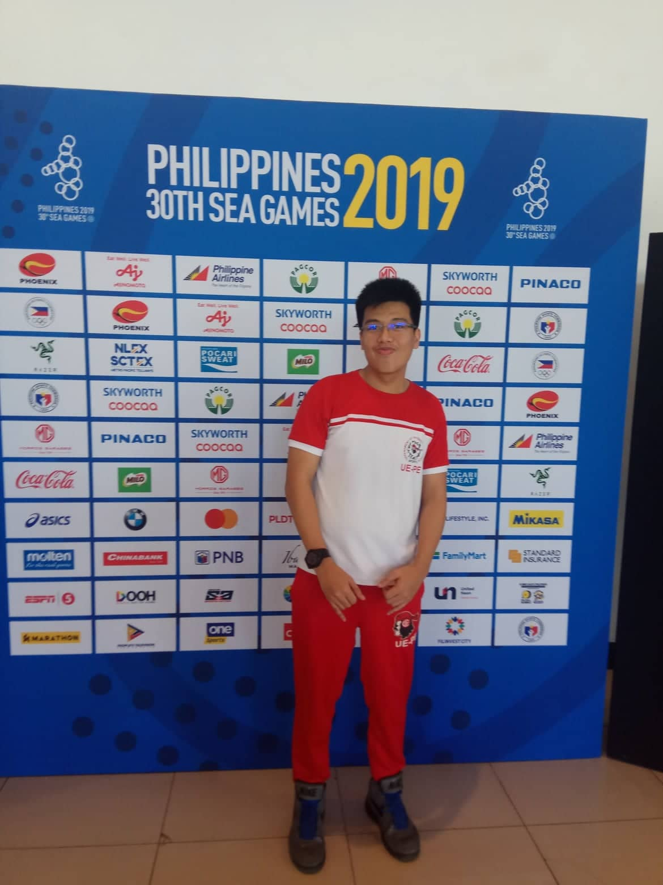
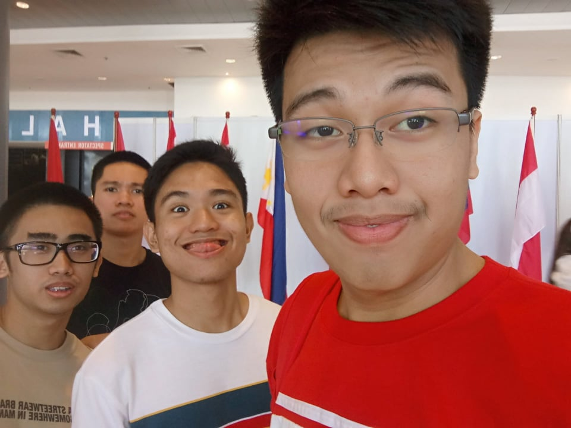
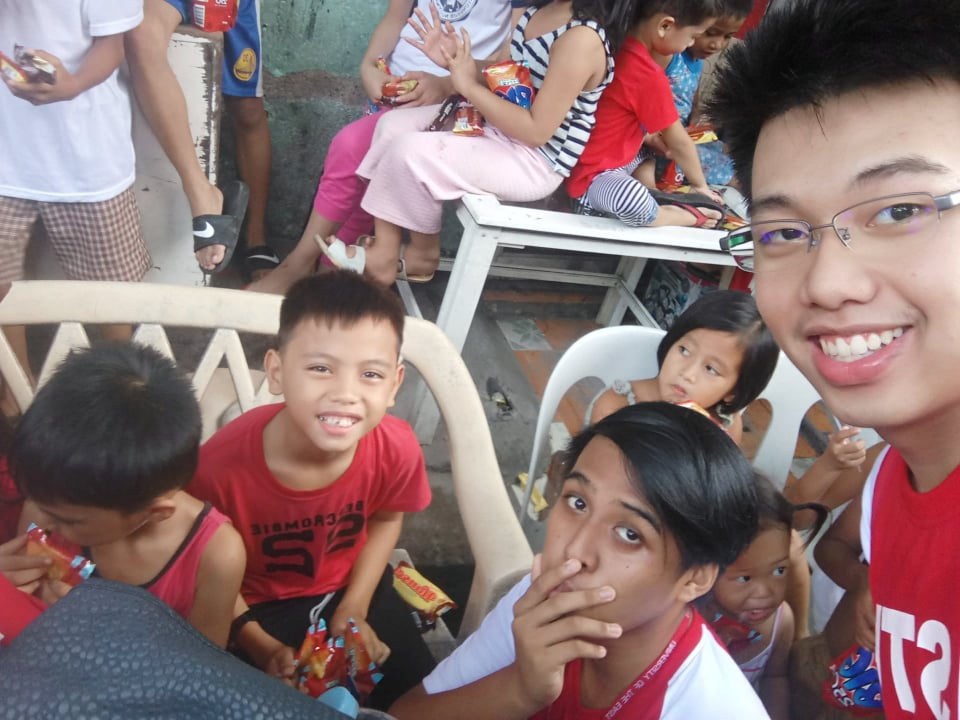
Childhood is when you can smile from true happiness and appreciate the smallest of things. 1 Reminiscing the past really gives me the nostalgic vibes. 2 I remember the times that I spent with my childhood friends and classmates. 3 I used to enjoy playing outside with my friends during late afternoons; Tumbang Preso, Patintero, Luksong Baka, etc. were the games that made my childhood more memorable. 4
At school, I was shy at quiet when I was at kindergarten, and I seldom interact with my classmates. 5 I feel nervous and uncomfortable probably because I was still adapting to my surroundings. 6 Soon enough, as a first grader, I began to socialize more and enjoy school. 7 I look forward to the lessons and events that will happen in school. 8 However, my grades are low and my mother decided to hire a tutor. 9 I remember how I always went to the nearby barrio for my scheduled tutor sessions. 10 Eventually, my scores got better and for the next academic year, I was shocked to find out that I was listed in the star section. 11 Since then, I was able to consistently maintain my grades and belonged to the star section up until my highschool graduation. 12 I can proudly say that our childhood is one of most precious memories we should treasure. Our experiences are cumulative which makes up who we are right now. 13
The past mistakes, failures, and challenges we've been through as a child, served as our guide in growing up. 14 I am glad and grateful to have experience playing with my friends outside before the technology era comes forth. 15 I've realized how priceless my childhood is. 16 We can never go back in time, so reminiscing my childhood sparks warmth in my heart. 17 Yes, I regret some things that I could have done as a child. 18 Doing things that makes you happy without a care in the world is just pure bliss. 19 I wish I could have spent more time with my friends, knowing that at some point, the time will come that we won't be together anymore. 20 Still, I can say that I am beyond blessed to have a such heartwarming and fulfilling childhood. 21
As I enter adolescence, the world I see slowly changes. 1 We are bound by our duties, roles, and responsibilities. 2 My teenage years mostly consists of my junior highschool and senior highschool days. 3 During this time, I witnessed the reality of the world we live in. 4
I learned how to deal with people, and respect their opinions. 5 I learned to value my family and helped with their problems. 6 I always try to be a good son as well as a good person overall. 7 My time in highschool really changed a lot in me. 8 I've become more sensitive in other people's feelings, and I learned to manage my priorities. 9 At this time, I am still undecided what I really want to become in the future. 10 When I was a child, I only thought of being a lawyer. 11 But, that's just what you call a little kid's dream, which is not to be taken seriously. 12 In reality, I don't really intend to become a lawyer. 13 By this time, I want to be a police officer. 14 Actually, I joined our school's ACP, which is similar to CAT in other schools. 15 I learned a lot about how the military works, and their training regimen as well. 16 We also went to Fernando Air Base in Lipa, Batangas for our encampment. 17 I had so much fun, and learned a lot of new things. 18 I get to assemble and disassemble an M16 rifle. 19 Plus, I experienced firing a rifle, which is loud and heavy. 20 I also gained new friends from different schools who also attended the encampment. 21
Honestly, my teenage years is the most fun for me. 22 This is the time of my life when I've experienced most of my firsts. 23 It is a rollercoaster ride of I am willing to take any day. 24 Adolescence is one hell of an experience. 25
Adulthood is the time of your life where you need think of your future seriously. 1 Motivation is what keeps you to continue pursuing your dreams and aspirations in life. 2 Adulthood is the time when you need all the strength you accumulate to get by each day while still enjoying your life. 3 Priorities become more prominent, our perspective widens, and responsibilities become more heavier. 4 It's like entering a new dimension. 5
College is takes your studies in a whole new level. 6 You are given the freedom to manage your own schedule, and no one would bother if you did not attend you class. 7 In college, I've learned how to be more responsible in how I handle my studies. 8 I became more concerned with my grades, and really tried my best to learn every subject. 9 Originally, I planned to enroll as an HRM student, because I believed that there are no jobs waiting for me after I graduate. 10 And so, I chose Information Technology as my course, since I like computers. 11 If there is one thing I regret, that is not following my heart in becoming a chef. 12 I think I'd be more motivated and fulfilled every day knowing that I chose what I wanted. 13 I believe I'll be more happy in taking classes, doing assignments, and going to school. 14 Anyway, studying Information Technology is also fun; I have the privelege to learn programming and how computers really work. 15
If there is one thing I learned in college, it is the act of being kind and helpful. 16 College is not a competition; if you can help, even in a small way, then do it. 17 I am wholeheartedly thankful to all those people who helped me along the way. 18 The road will only get rougher from this point. 19 Hence, I will work harder to ensure that I will achieve my dreams in the future. 20 By the way, I want to become a businessman now. 21